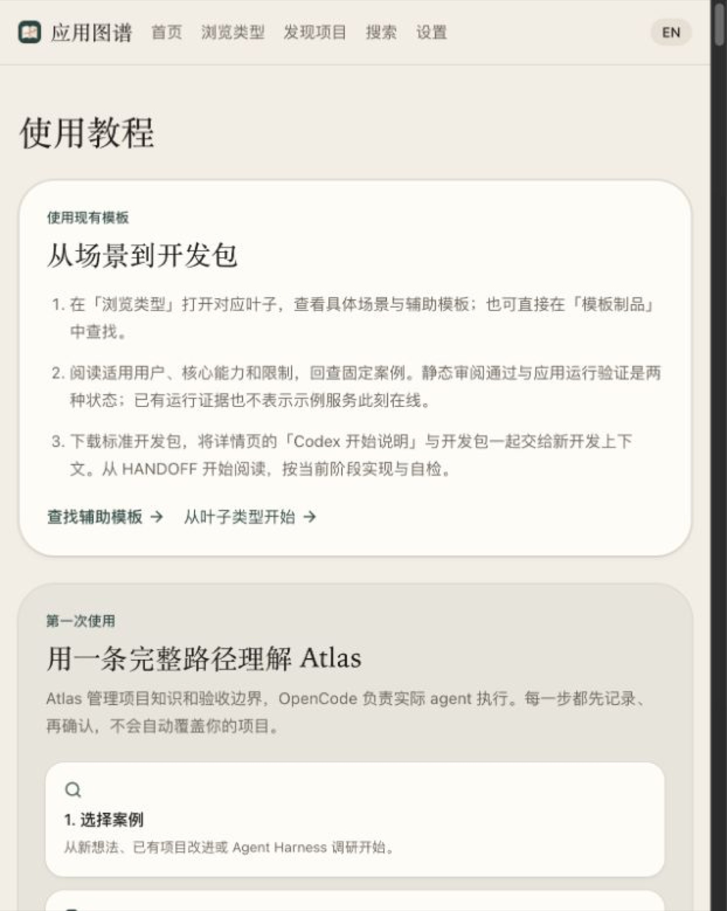

1,805 个软件类型、29 个大域的资料库及本地工作台。
介绍
英文档案是内容真相源，配套研究笔记、分类目录和持久化的翻译记录。在此之上有一个模板工厂：从场景模板导出标准开发包，再交给 AI 实现并验证浏览器旅程。
核心功能
- 1,805 个类型、29 个大域、270 个目录节点、33 个产品实例
- 正式英文档案，对应研究笔记与边界依据
- 本地草稿 API 与 React 前端工作台
- 模板工厂：个人收藏夹、个人预算、会议笔记等试用场景
截图


 GitHub ↗
GitHub ↗
1,805 个软件类型、29 个大域的资料库及本地工作台。
英文档案是内容真相源，配套研究笔记、分类目录和持久化的翻译记录。在此之上有一个模板工厂：从场景模板导出标准开发包，再交给 AI 实现并验证浏览器旅程。
